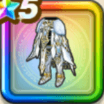

白き英雄の鎧下
攻略班 9.5点 / 石化耐性+5%魔王ラスヴェーザへの耐性+10%眠り耐性+5%石化耐性+5%眠り耐性+5%スキルの斬撃ダメージ+8%バギ属性斬撃・体技ダメージ+5%メラ属性斬撃・体技ダメージ+5%デイン属性斬撃・体技ダメージ+5%会心率+3%
くわしい特徴
【レベル別習得スキル】 Lv1石化耐性+5% Lv3魔王ラスヴェーザへの耐性+10% Lv5眠り耐性+5% Lv8スキルの斬撃ダメージ+8% Lv8会心率+3% Lv10バギ属性斬撃・体技ダメージ+5% Lv12メラ属性斬撃・体技ダメージ+5% Lv15デイン属性斬撃・体技ダメージ+5% Lv18石化耐性+5% Lv20すばやさ+7 Lv23眠り耐性+5% Lv25戦闘終了時にMPを3回復する 【限界突破スキル】 1凸攻撃力+12 2凸すばやさ+12 3凸守備力+12 4凸さいだいHP+12